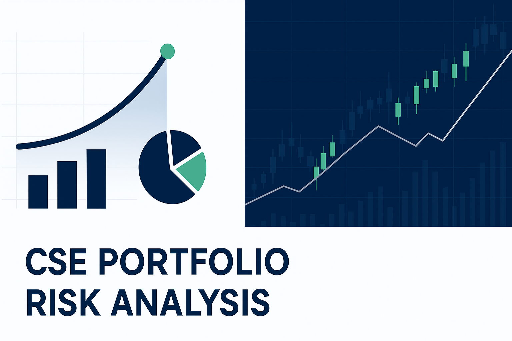
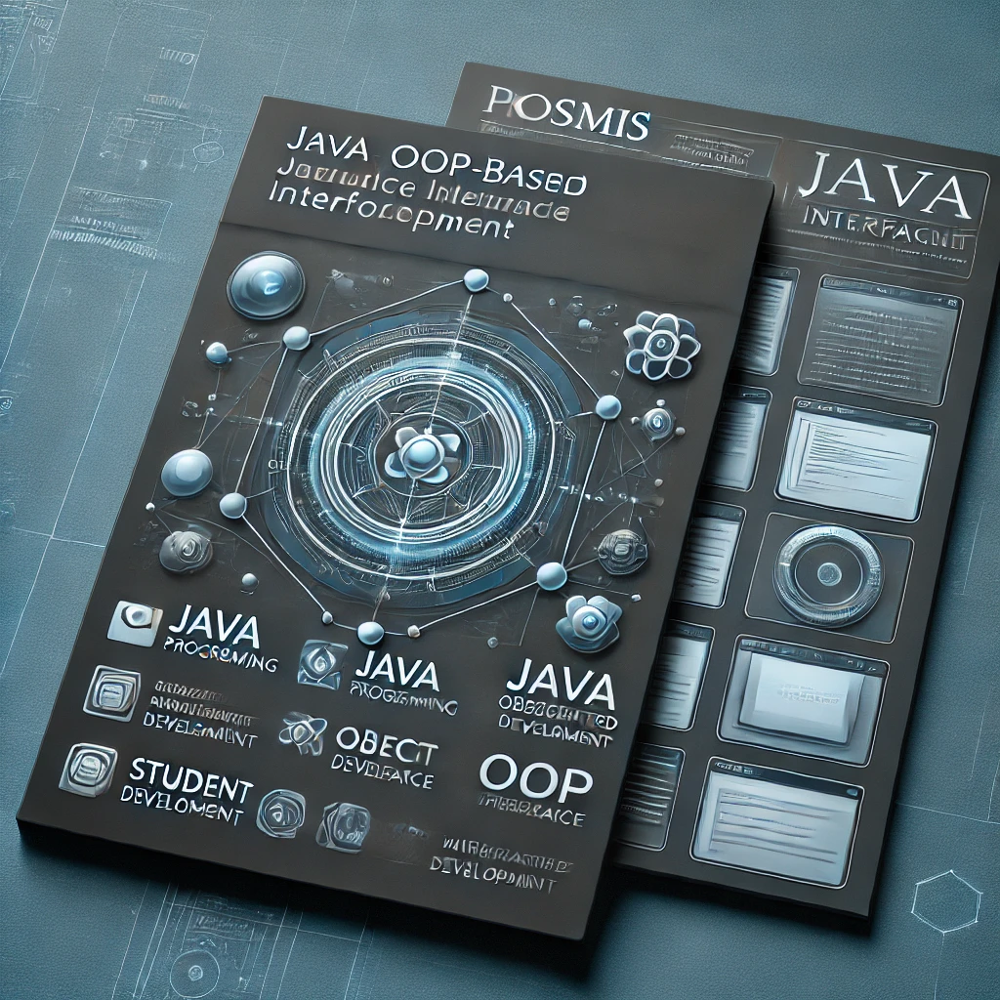
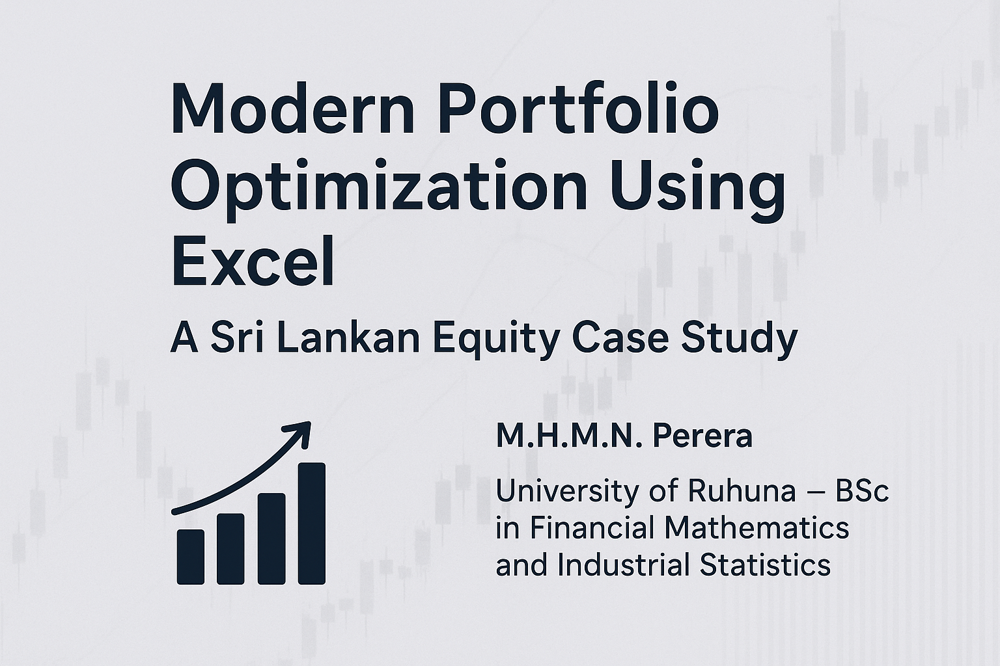

01 / 06FINANCE · REPORT
Portfolio risk & return analysis
Applied modern portfolio theory to Sri Lankan equities, exploring expected returns, beta, Value at Risk, and Treynor ratios.
Read report ↗Open to analytical opportunities
I’m M. Nethmina Perera — a financial mathematics undergraduate and actuarial analyst who turns data, models, and uncertainty into decisions people can act on.
Simple outputs from complex inputs.
Context before conclusions.
Every dataset has a story.
A little context
I am an undergraduate at the University of Ruhuna pursuing a B.Sc. Honours in Financial Mathematics and Industrial Statistics while developing practical experience as an Actuarial Analyst Intern.
My work lives where mathematical thinking meets business context and human decisions. I enjoy finding signal in noisy data — from insurance claims and reserving to portfolio risk, predictive modelling, and social research.
Selected work
Research, finance, modelling, and software work — each project is an exercise in asking better questions and building useful answers.

01 / 06Applied modern portfolio theory to Sri Lankan equities, exploring expected returns, beta, Value at Risk, and Treynor ratios.
Read report ↗
Investigated how digital banking service quality influences satisfaction and loyalty among undergraduates at the University of Ruhuna.
View study ↗
Used multiple linear regression to study the impact of customer count, menu pricing, promotions, and marketing spend.
View case study ↗
Fitted a logistic growth model to explore the balance between ecological conservation and resource management.
View case study ↗
A desktop interface demonstrating object-oriented design principles and CRUD functionality for a university project.

Optimised a small investor portfolio using CSE data and Excel Solver to maximise the Sharpe ratio.
Read report ↗No projects match that search. Try another keyword.
Working toolkit
Risk analysis, regression, portfolio theory, time series, data interpretation, and research design.
Building reproducible analysis, visualisations, models, and decision-ready reports.
Explaining technical work clearly, collaborating thoughtfully, and staying practical.
Experience & education
A foundation built through formal study, applied projects, and a habit of learning in public.
Working with real-world insurance data, claims analysis, reserving techniques, and statistical modelling.
University of Ruhuna, Department of Mathematics. Building a rigorous base in mathematics, statistics, finance, and programming.
Wayamba Institute of Technology. Project planning, cost estimation, construction documentation, and analysis.
Combined Mathematics — A · Physics — C · Chemistry — C
Notes from the desk
Short reads on finance, statistics, markets, and the questions behind the numbers.
Open writing archive ↗Whether you’re looking for an analytical mind, want to talk research, or simply want to say hello — my inbox is open.